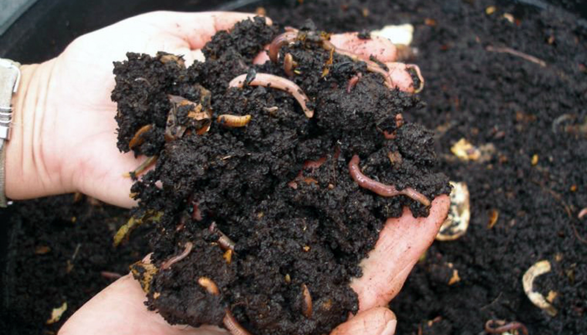

Este documento se presenta de forma practica la preparación de abono orgánico, para que los productores conozcan las diferentes alternativas para enriquecer sus suelos.
Los desechos de compuestos son estiércol de los animales domésticos (borrego, gallinas, burros etc.) los residuos de alimentos de origen vegetal.
En la microempresa de producción de abono orgánico en la comunidad de Tzacuala primero, Tehuipango Ver.
Actualmente los fertilizantes inorgánicos o sales minerales suelen
ser más baratos y con dosis más precisas y más concentrados. Sin embargo, salvo en cultivos hidropónicos,
siempre es necesario añadir los abonos orgánicos para reponer la materia orgánica del suelo.

 |
|